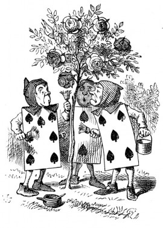

A large rose-tree stood near the entrance of the garden: the roses growing on it were white, but there were three gardeners at it, busily painting them red. Alice thought this a very curious thing, and she went nearer to watch them, and just as she came up to them she heard one of them say, 'Look out now, Five! Don't go splashing paint over me like that!'
'I couldn't help it,' said Five, in a sulky tone; 'Seven jogged my elbow.'
On which Seven looked up and said, 'That's right, Five! Always lay the blame on others!'
'YOU'D better not talk!' said Five. 'I heard the Queen say only yesterday you deserved to be beheaded!'
'What for?' said the one who had spoken first.
'That's none of YOUR business, Two!' said Seven.
'Yes, it IS his business!' said Five, 'and I'll tell him--it was for bringing the cook tulip-roots instead of onions.'
Seven flung down his brush, and had just begun 'Well, of all the unjust things--' when his eye chanced to fall upon Alice, as she stood watching them, and he checked himself suddenly: the others looked round also, and all of them bowed low.
'Would you tell me,' said Alice, a little timidly, 'why you are painting those roses?'
Five and Seven said nothing, but looked at Two. Two began in a low voice, 'Why the fact is, you see, Miss, this here ought to have been a RED rose-tree, and we put a white one in by mistake; and if the Queen was to find it out, we should all have our heads cut off, you know. So you see, Miss, we're doing our best, afore she comes, to--' At this moment Five, who had been anxiously looking across the garden, called out 'The Queen! The Queen!' and the three gardeners instantly threw themselves flat upon their faces. There was a sound of many footsteps, and Alice looked round, eager to see the Queen.
First came ten soldiers carrying clubs; these were all shaped like the three gardeners, oblong and flat, with their hands and feet at the corners: next the ten courtiers; these were ornamented all over with diamonds, and walked two and two, as the soldiers did. After these